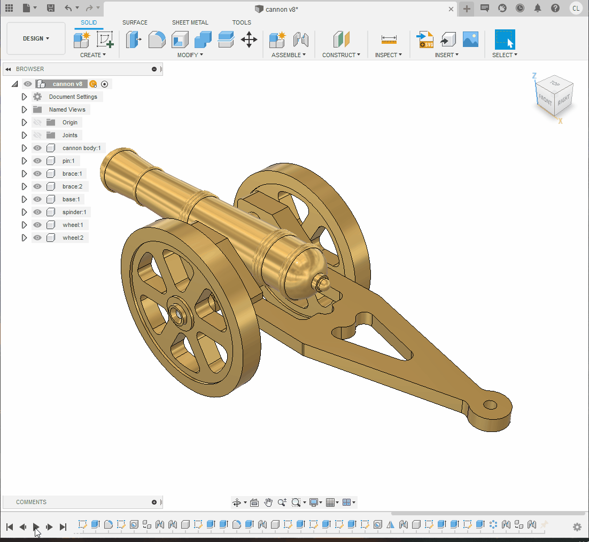
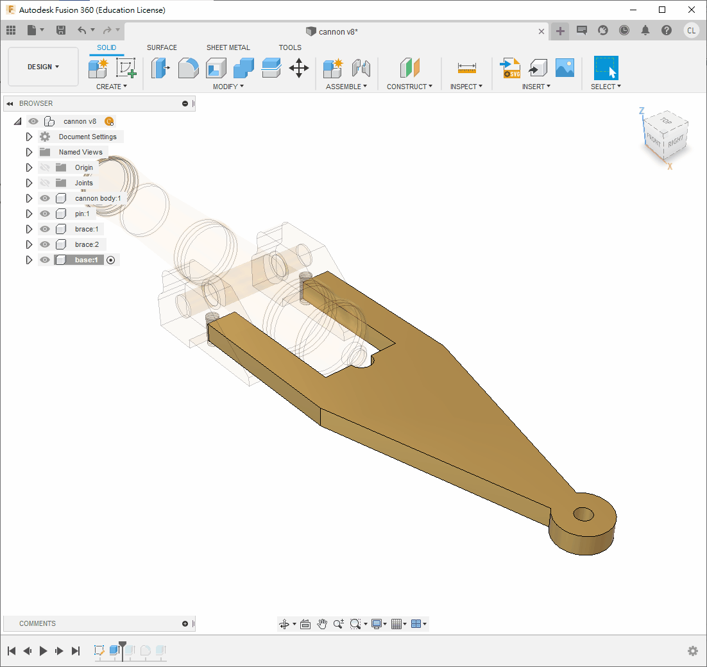

2.4 Brass Canon
本節要繪製的是傳統的大炮，雖然由於課程時間和機器限制，無法像以往一樣使用車床和銑床製作此大炮。但我們將教大家如何繪製此大炮，不僅是為了傳承這種情懷，同時也讓同學們日後能夠運用 CNC 機器製作此大炮。

Step 1
首先在首頁利用指令
new component開一個新的組件，名為cannon body確保啟用此 component，小黑點在旁邊
用指令
new sketch開啟一個新的草圖，根據圖形前半部分繪製三個長方形和一個圓形使用快捷鍵
s搜尋Change Parameter，創建一個新的變數，名為stepSize，內容為1.5mm，以便後續修改使用快捷鍵
s搜尋Revolve，選擇上半部分，使用 X 軸旋轉 360 度
❗ Fusion 360 等特徵編輯軟件並不擅長處理 2D 圖形。如果同一個 2D 圖形內容太多，關係式太多，因尺寸和關係互相依賴，會令電腦極慢甚至死機。
💡 你也可以不完全按照我的步驟，一次性繪製多個圖形，但請記得不要太多。


下一步，進入
cannon body"這個 component，用指令new sketch開啟一個新的草圖使用 快捷鍵
P投影之前的 body 到此草圖中，根據圖形尺寸繼續繪製使用
Revolve，選擇 X 軸旋轉 360 度


使用快捷鍵
s搜尋Change Parameter，創建一個新的變數，名為cannonBodyHole，內容為 8mm


繼續根據 PDF 的尺寸繪製。
弧可以使用指令
3 Point Arc來繪製，只需要指定起始點、終點和半徑即可


Step 2
開啟一個新的 component，名為
pin，並確保啟用此 component(小黑點在旁邊)用指令
new sketch開啟一個新的草圖按一下前一個component
cannon body旁的三角形按一下
sketch旁的眼睛圖示，將隱藏的草圖顯示出來按一下
body旁的眼睛圖示，將大炮暫時隱藏起來使用快捷鍵
P投影之前大炮身草圖的圓，如下圖3所示記得要投影原始的草圖，投影 body 的話是沒有中心點的
用
change parameter創建一個新的參數，名為baseWidth，內容為21mm使用快捷鍵
e擠出，direction選擇symmetric，長度為baseWidth


用
change parameter創建一個新的參數，名為braceHole，內容為6mm在圓形的一側開啟一個新的草圖，繪製一個圓形
用快捷鍵
e擠出長度8.5mm使用鏡像功能(
mirror)鏡像剛才擠出的特徵，鏡像平面為世界 XZ 平面，見下圖3。最後，使用快捷鍵
j聯接將pin和cannon body組合起來，類形使用revoling joint


Step 3
用快捷鍵
s搜尋new component開啟一個新的component，名為brace確保小黑點在旁邊已經啟用此 component
在
pin的最邊緣，用快捷鍵s搜尋new sketch開啟一個新的草圖，見下圖投影圓形，並根據圖則繪製整個固定架


使用快捷鍵
e擠出8mm使用快捷鍵
f修整圓角在底部根據圖則繪製一個點，距離邊緣 20mm，見下圖2
使用快捷鍵
s搜尋Hole，根據圖則選擇孔的類型為非沉孔，孔的螺紋為有螺紋，其他選項見下圖3孔的深度和直徑在 Fusion 360 中也是十分清楚地標明的，選擇深度為 8mm，寬度為 M4 螺絲，如下圖3


之後就可以將小黑點移回到最上層，用
Ctrl+C/Ctrl+V複製貼上多一個brace使用快捷鍵
j將其與pin進行聯接，在motion頁面選擇revolving jointBrace的厚度為8mm，而pin凸出為8.5mm，故有0.5mm凸出來是正常的


Step 4
下一步是繪製大炮的底座
將小黑點移回到最上層，開啟一個新的 component，名為
base確保小黑點在
base旁，在 XY 平面或者bracecomponent 的底部添加一個新草圖，見下圖2根據圖則繪製，圓角可以暫時不用劃，但因為中間的半徑為 4.5mm 的圓與上下偏移 8mm 的線形成不到單一直線，不能使用
fillet功能，因此需要在 2D 草圖中使用 TTR 完成，見圖2


跟著依次擠出和修圓便完成了
完成後，使用快捷鍵
j將底座和其中一個brace"進行聯接，motion頁面使用rigid joint

Step 5
將小黑點移回到最上層，用快捷鍵
s開啟一個新的 component，名為spinder在 XY 平面或者
basecomponent 的底部添加一個新草圖快捷鍵
p投影兩個4mm孔，並繪製一個對稱的40mm x 7.8mm方形，如下圖1所示使用對稱擠出
7.8mm，如下圖3如果使用對稱方式，之後繪製旁邊的圓形會較容易
之後就可以繪製和擠出
12.5mm和7.8mm的圓形，如下圖4和5


快捷鍵
s搜尋new sketch指令，在最外的平面開啟一個新草圖只需要投影或者繪製一個點就可以，如圖2所示
用快捷鍵
s搜尋Hole指令，增加一個沉孔螺紋的鑽孔，如圖3所示將幾個擠出和鑽孔特徵使用鏡像功能鏡像，鏡像面為世界 XZ 平面，如圖4所示
完成後，就可以使用快捷鍵
j連接到之前繪製的零件上，如下圖5motion頁面使用rigid joint


Step 6
將小黑點移回到最上層，開啟一個新的 component，名為
wheel。確保小黑點在這個
wheel的 component旁開啟一個新的草圖，並投影
spindercomponent 的中點，如圖2在中點上繪製
8mm、13mm、54mm和64mm四個圓形不要直接投影
spinder"的圓形，因為它的尺寸是7.8mm而不是8mm


如 PDF 圖則所示，擠出
8mm和6mm在擠出時，
direction選擇Symmetric，如下圖1、圖2所示，方便之後操作


如 PDF 圖則所示，在輪子上繪製單一份的挖孔，如圖1
擠出之後，就可以使用快捷鍵
s搜尋指令Circular Pattern進行旋轉陣列，如圖2


後一個步驟是將輪子複製貼上，並使用指令
joint組合在一起motion使用revolving joint

完成!!!!!